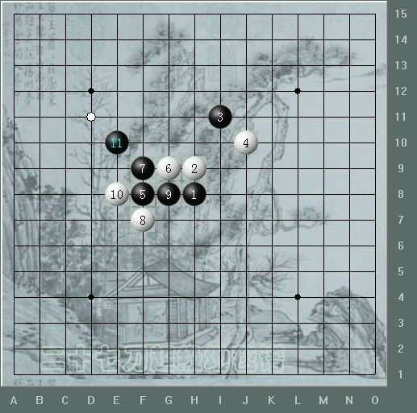
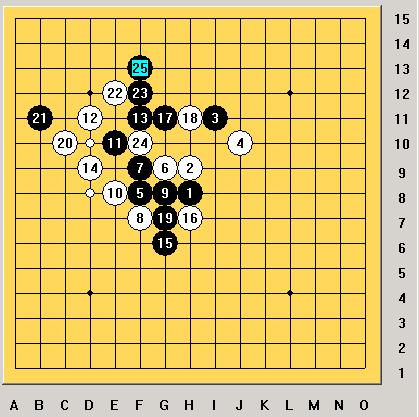

溪刀一型
首页
妖刀天下
#1 溪刀一型 作者：二十七刀 发表时间：2008-11-17 23:13:17
 溪刀一型.rar
溪刀一型.rar［ 失落刀 于 2008-11-17 23:37:14 时奖励此帖[金币加 20 威望加1］
#2 Re:溪刀一型 作者：二十七刀 发表时间：2008-11-17 23:15:59
图右下角下载
#3 Re:溪刀一型 作者：失落刀 发表时间：2008-11-17 23:38:06
没仔细看，请问反挡如何胜？
#4 Re:溪刀一型 作者：wrwak 发表时间：2008-11-18 11:15:58
反挡13还是不变 
#5 Re:Re:溪刀一型 作者：逆刃 发表时间：2008-11-18 12:35:57

是这个意思吗？
［ 失落刀 于 2008-11-18 13:34:01 时奖励此帖[金币加 20 威望加1］
#6 Re:溪刀一型 作者：失落刀 发表时间：2008-11-18 13:37:23
6走1和5的中间，黑可以杀吗？
#7 Re:溪刀一型 作者：冷面孤煞 发表时间：2008-11-18 21:39:33
 哥哥有地毯弄上来看看嘛
哥哥有地毯弄上来看看嘛
#8 Re:Re:溪刀一型 作者：闫荣辉 发表时间：2008-11-18 21:48:56
我也买终结者吧！自己打谱！
#9 Re:溪刀一型 作者：失落刀 发表时间：2008-11-18 23:13:01
6走2的上面，黑如何呢？